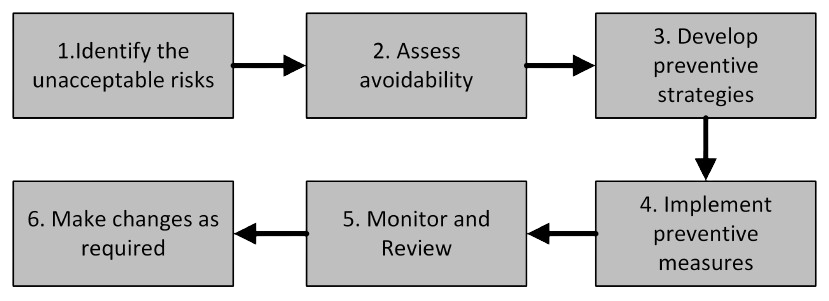
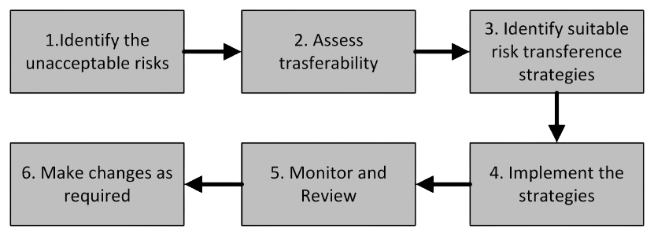

Phase 2: Step 1:
Risk Control Option Analysis
Upon completion of identifying the unacceptable risks as detailed in Phase 1, the next step is to treat the identified unacceptable risks. There are three options for risk treatment, as follows:
Risk Avoidance
Risk avoidance involves taking specific actions to eliminate the activities or technologies that give rise to the risk, or revise or reposition these activities or technologies to avoid the potential for unacceptable risks.
Risk Avoidance Process
The risk avoidance process comprises the following steps:

- Identify the unacceptable risks - Identify the unacceptable risks as detailed in Phase 1.
- Assess avoidability - Evaluate whether there are practical alternative approaches, methods, or decisions that could completely eliminate or significantly reduce the exposure to the risk.
- Develop preventive strategies - These strategies might include using alternative approaches, modifying existing processes, or choosing not to participate in specific activities or decisions altogether.
- Implement preventive measures - Implement the developed preventive measures which might include revising plans, altering processes, implementing clear guidelines and protocols to effectively prevent the risks.
- Monitor and review - Regularly monitor and evaluate progress to confirm that the planned risk avoidance strategies are being implemented effectively and that any emerging risks are identified and managed without delay.
- Make changes as required - If new risks arise or the current risk avoidance measures prove inadequate, modify or improve the strategies as needed. This may involve revising procedures, improving training programs, or updating protocols.
Example: Risk of data leakage in training an AI model with sensitive patient data
Risk: Training the AI model on raw patient data which may lead to accidental data leakage
Risk Control Option: Risk avoidance
Do not train the AI model using sensitive or personally identifiable information (PII), instead use synthetic data or rely on public anonymised data sets that do not contain PII.
Risk Sharing or Transfer
During risk sharing/transfer, the risk is partially or fully shared with, or transferred to, another party. It is an appropriate risk response when there is a possibility to share or transfer the liability and responsibility associated with the risk to another party. It is important to note that risk transfer reduces neither reduces the likelihood nor the impact of the risk. Rather, it involves sharing of liability or responsibility for other adequate risk responses such as mitigation. Risk sharing is usually applied when addressing a risk requires expertise or resources that are better provided by another party.
Risk Transfer Process
The risk transfer process comprises the following steps:

- Identify the unacceptable risks - Identify the unacceptable risks as detailed in Phase 1.
- Assess transferability - Evaluate whether there is a possibility of transfering the liability and/or responsibility fully or partially to another party.
- Identify suitable risk transference strategies - These strategies might inlcude the following.
- Insurance - One of the primary and most widely used methods of risk transfer is obtaining a comprehensive insurance policy. Companies often secure insurance from various providers to ensure protection in case of emergencies.
- Contracts - Form agreements with suppliers, contractors, and other third parties that specify a shared responsibility for certain risks.
- Joint ventures - Partner through collaborations and joint ventures with other organisations to reduce and transfer some operational risks. Such arrangements allow organisations to share resources, knowledge, and accountability, ensuring the risk is more equally divided among the parties involved.
- Outsourcing - Assign specific tasks to other professionals or contractors to carry out on your behalf.
- Subcontracting - Similar to outsourcing, this involves assigning particular tasks or processes to an external company. This method allows the primary organisation to shift a portion of the project's risk to the subcontractor, who then becomes responsible for managing those designated activities.
- Implement the strategies - Implement the identified transference strategies.
- Monitor and Review - Regularly monitor and evaluate progress to ensure that the planned risk transference strategies are being implemented effectively and that any emerging risks are identified and managed promptly.
- Make changes as required - If new risks arise or the current risk transference measures prove inadequate, modify or improve the strategies as needed.
Example: A medical device company develops an AI-powered radiology system that assists radiologists in diagnosing conditions from CT and MRI scans. The device captures and processes sensitive patient imaging data, which is sent to a cloud-based AI model for analysis.
Risk: Data security risks such as potential data breaches, unauthorised access or cyberattacks can arise due to storing sensitive or personally identifiable information (PII).
Risk Control Option: Risk transference
Partnering with a HIPAA-compliant cloud service provider (e.g., AWS, Google Cloud, Microsoft Azure) to manage data storage, encryption, and access control.
The risk can be transfered by:
- Signing a Business Associate Agreement (BAA) legally committing to protect all PII they handle.
Risk Mitigation/Reduction
Risk mitigation or reduction is the appropriate risk response for the portions of risk that cannot be avoided, shared or transferred. Necessary risk controls should be implemented to mitigate these risks. This framework provides a comprehensive list of assets, threats, vulnerabilities, controls, and control implementation details on Next page.
All unacceptable risks should be evaluated by considering the above risk treatment options. Risks that require mitigations, can be shared/transferred, or can be avoided should be listed separately in the risk management report, along with the rationale for each decisions.